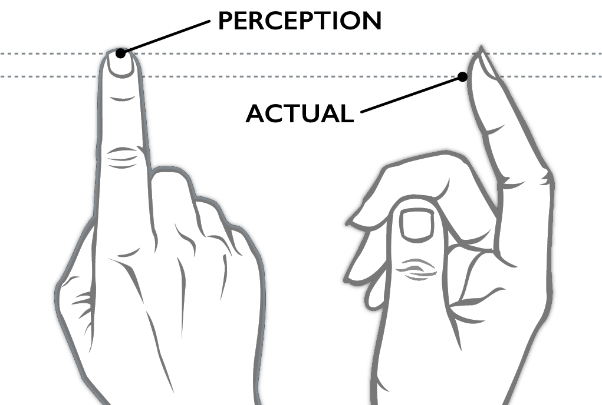

When Steve introduced the iPhone about forty-one minutes* into his keynote at Macworld 2007, he clicked to a slide showing a dark Apple logo eclipsing the sun, then he said, “This is a day I’ve been looking forward to for two and a half years. Every once in a while, a revolutionary product comes along that changes everything.”1
I was in the audience on that day, and while I was excited about the big on-stage reveal that everyone on the Purple project had been working toward with such determination, I wasn’t sure what to think about Steve’s claim. He had a conviction about the iPhone in that moment; I only had hopes for it.
For the previous year and a half, I had been treating Purple as a prototype rather than a product, and I was usually paying attention to the parts that didn’t work quite right yet—developing features, fixing bugs, pushing for the next improvement, aiming toward the next demo. It’s difficult to maintain a wider perspective in the midst of making; you have to make sure each individual demo feedback and response cycle eventually adds up to something more.
“The Intersection,” the title of this chapter, was an idea that helped us. It speaks to the way Apple valued expertise in both technology and liberal arts. We used this notion to guide our efforts as we developed and lived on our gadgets, so that they turned out to be more than an agglomeration of the latest CPUs, sensors, and software manufactured at scale. We hoped to make our products meaningful and useful to people.
Unlike the unspoken idea of creative selection, we did talk about “working at the intersection” among ourselves. There was even a formal Apple University† course on the topic—a moderated half-day session to discuss melding technology and liberal arts, the reasons it might be difficult to work at this intersection, and why it was essential to keep trying, since the effort lay at the core of the Apple notion of a great product.
Not only was the intersection freely discussed inside the company, but oddly for Apple, the discussion didn’t stop at the edge of the Cupertino campus. Steve Jobs told everyone what he thought about this topic himself, on stage, during the keynote presentation to announce the original iPad:
The reason that Apple is able to create products like the iPad is because we’ve always tried to be at the intersection of technology and liberal arts, to be able to get the best of both, to make extremely advanced products from a technology point of view, but also have them be intuitive, easy to use, fun to use, so that they really fit the users. The users don’t have to come to them, they come to the user.2
The notion of working at the intersection goes back far into Apple history. Steve used it to explain why the original Macintosh in 1984 had proportionally spaced fonts instead of the monospace teletype-like characters typical on computers of the day.3 From that time forward, working at the intersection became a summation of the qualities Apple aspired to instill in its products. It went beyond fonts, colors, and the visual design elements you might think of when you hear the word “art” in liberal arts.
The effort extended to all the senses. I wanted the iPhone keyboard click to evoke the clack of a typewriter key striking a page and ultimately achieved this by striking my pencil on the edge of my desk. I’d been inspired by a story I heard of how Ben Burtt, the sound designer for the first Star Wars movie, made the sound effect for blaster shots by recording hammer strikes on a guy wire for an antenna tower.‡4
Working at the intersection is not only about honing details so that an individual icon, animation, or sound achieves an aesthetic ideal in isolation. Liberal arts elements and state-of-the-art technology must combine, and the end result can be judged only holistically, by evaluating how the product fits the person.
The three brief stories that follow illustrate how we did this throughout the development of the iPhone. They describe the way some of the features and attributes of the iPhone software came to be and demonstrate specific instances of our attempts to work at the intersection.
The First-Ever iPhone Game Was Serious Fun
When I started on the iPhone team in the summer of 2005, I was a complete novice with touch software. When I was issued my first handheld Wallaby, it was a novel experience to write a program, launch it on my Mac, and see the graphics for the app show up on the prototype touchscreen. I’d take my hands off the keyboard of my Mac, pick up the Wallaby, and then tap icons, choose rows in scrolling lists, and navigate around in apps. Everyone else on the Purple hallway was doing the same thing, testing out what it was like to interact with software and imagery on the Wallaby using our fingers.
All of us on the software team were trying to solve our own technical problems, trying to bootstrap apps like Mail, Safari, Notes, and SpringBoard, and before long, we started asking each other the same “big” question: How large should we make objects on the screen so they’re easy to tap? Tap targets needed to be small enough so that a single screen displayed enough content to be useful but large enough that you could confidently tap what you wanted. Beyond that, we didn’t have more detailed notions about the sizes of onscreen objects.
It was especially important to get this right for SpringBoard, the program that displayed the home screen icons. These rounded-off squares represented all the apps on the device. Tapping a SpringBoard icon launched an app that took over the entire screen. Tapping the correct icon was satisfying, since it made the whole iPhone interface become a note taker, a web browser, or a calendar. Moving from task to task happened at the speed of thought. Tapping the wrong app icon could be jarring, like realizing you picked up a fork instead of a spoon only after dipping it in a bowl of soup.
For SpringBoard, this ergonomic issue reduced to finding the optimal easy-to-tap size for such an icon on the home screen. We didn’t know what this might be, and the first few Purple demo sessions with Wallabies gave us some insight into the range in anatomy and dexterity we could expect to find in the general population.
Scott Forstall had long, spidery fingers that narrowed to small fingertips. He could arch his thumbs high above the Wallaby display and then move them up and down with nearly mechanical precision, like rocker arms in the valve train of an engine. Scott was genetically predisposed to be amazingly accurate with his touchscreen taps, and he could confidently target and hit the smallest onscreen user interface elements without thinking about it.
In contrast, Greg Christie’s hands shook. His fingers were especially juddery if he had just taken a walk outside to smoke a cigarette. If one of us on the software development team gave Greg a too-small icon that was too difficult for him to tap, he would try anyway, and when he failed, he would heave his characteristic sigh—his loud, long, disgruntled New Yorker’s sigh—to express his $#!&% frustration that he couldn’t use the thing you handed him. Greg would be in the right too. Remember, Steve Jobs didn’t say products should thwart the user; he said products should “come to the user.”
We expected the variance in the entire population would be larger than we’d seen with just Scott and Greg, but their differing user experiences provided us with proof early on in our development process that one of the most important user interactions for the iPhone rested on this question: What’s the best size for a home screen icon?
Scott Herz, one of my Purple teammates, soon gave us the answer. He wrote an app and circulated it around the Purple team. There wasn’t much to it. The app launched showing a very large Start button. After tapping that button, the screen would go blank for a moment, then a box would appear somewhere on the display. The goal was to tap the box. After you tapped, whether you succeeded or failed, and after another momentary blank, another box would appear somewhere else. Only this next box would be a different size, maybe larger, maybe smaller. Tap the box. Tap the box. Tap the box.
Honestly, it was fun. Like a game. After twenty or so boxes and taps, the “game” would end, and the app would show you your score: how many boxes you hit and how many you missed. Behind the scenes, the software tracked the sizes of the boxes and their location. Since it was a fun game to play . . . ahem . . . a serious test program to gather essential touchscreen usability data, the Herz tap app made a quick round of the Purple hallway. Within a few days, we had quite a bit of information about tap-target sizes and accuracy.
The results of Scott’s game showed that if we placed a box on the screen that was fifty-seven pixels square, then we could put it at any location—high, low, left, or right. If we did that, then everybody could tap the box comfortably, with near 100 percent accuracy.
Scott’s game gave us the answer we were looking for. The tap targets for home screen icons on the original iPhone were fifty-seven pixels square.
Smooth
One of the key concepts of the iPhone user interface is direct manipulation. This idea refers to giving software objects some of the same attributes and behaviors as physical objects, enabling people to interact with digital bits as if they were real-world items.
Here’s an example. Picture yourself sitting in an office. You have two objects on your desk, a piece of paper and a manila file folder. If you want to put the paper into the folder, you reach out with your hand, pick up the paper, and move it into the folder, perhaps tipping the folder open a little as you do so to make the filing go more smoothly. Acting directly on an object produces a result, and there’s a constant flow of sensory feedback—visual, tactile, auditory—to help you monitor your progress.
Throughout the history of computing, such humdrum activities have never been that easy. For decades, computers compelled users to type text commands to interact with digital objects, and this conceptual distance made it more difficult to get things done. On a UNIX computer, a command to move a document to a folder might be:
mv paper.txt folder
To issue this command, you would have to know the name of the “move” program—cryptically shortened to “mv”—and remember that the thing you want to move comes first, the destination second. Command line interfaces like this make computing abstract, distant, and nonintuitive for everyone but the geeks who think it’s cool to learn all the arcane incantations. For everyone else, the (correct) reaction is: “Yech!”
Back in the 1980s, Apple had helped to change this with the Macintosh. The graphical user interface of the Mac, with its mouse and icons, offered a more direct experience. Interacting with an object meant moving the mouse to the object you wanted. Picking it up was done with a click and hold on the mouse button, a gesture that evoked grasping the object with your hand. Dropping the object into a folder meant moving the object on top of an icon of a folder and releasing the mouse button. All these conventions made computing friendlier, and they helped to introduce the concept of direct manipulation: You could see icons on the screen that represented the objects available to interact with, and you could point at them with the mouse.
Apple didn’t invent direct manipulation—a computer scientist named Ben Shneiderman did in 19825—but the Mac was quick to popularize it. Early on, Apple was aware of this cutting-edge human–computer interaction research, understood the core technological concept, built a system around it, and, starting in January 1984, bundled it into a product that people could buy. The Mac and the mouse helped to establish the Apple tradition of using new technology to solve age-old interaction problems, and this approach served as inspiration for many years to come.
Even before the Purple project started, a few designers and engineers at Apple believed finger-based multitouch software had the same potential as the mouse. They believed that touch could move the interaction model of computing to the next level of directness. Their hope was that multitouch could eliminate the need for a mouse altogether. See an object on the screen? Just reach out and touch it with your finger.
Imran Chaudhri was one of these early multitouch proponents, and he helped to supply the design inspiration that transformed this new technology into a product.
The software design group at Apple called itself Human Interface for a reason. Humans were the focus, and, as much as anyone I’ve ever met, Imran believed products must serve people. Like so many other influential people at Apple, Imran’s work was a sharply focused reflection of his personality. He had a smoothness, a low-key kind of cool that is vexingly difficult to describe but is communicated instantly in person. After talking to my wife for years about Imran, she finally got a chance to meet him at an Apple-sponsored party to celebrate one of our yearly software releases. Afterward, she said to me, “Yeah, I see what you mean about Imran. He’s got charisma.”
Charisma. Yeah, Imran had that. Yet, unlike Steve Jobs, the most famously charismatic person in Apple history, Imran never got in anybody’s face or dressed people down. Rather, he always spoke very softly. His manner drew you in close. While his hushed voice demanded attention, it had nothing to do with shyness. Indeed, Imran always knew exactly what he wanted, and he was perfectly clear when it came to communicating his design goals for the products we were developing.
From the start of our work on Purple, Imran had a vision for how multitouch user interfaces should behave. To illustrate what he meant, say to an assembled group of Purple software engineers and designers, Imran would clear a space on a flat surface in front of him, a table or a desk, then he would place a single sheet of paper down and extend his index finger to touch the middle of the sheet. Then he would begin sliding his finger and the paper around as an inseparable unit, swirling the sheet around and around, the lockstep movement of his gesture and the object he was manipulating modeling the fluidity and responsiveness he wanted for the iPhone user interface.
“Here, ladies and gents,” he would say with his kindly English accent, motioning with a nod of his head toward his demonstration, “it should work like this.”
Imran used this piece of paper gliding around under his finger to show how iPhone direct manipulation should feel, and for him, the feeling of it was essential.§ He believed the pixels on the iPhone screen needed to remain pinned under your finger as if they were real objects. He wanted people to be convinced that the movement of the digital bits on the screen was the result of physical forces—just like his index finger and the paper. Since the real sheet of paper never paused or stuttered, his argument went, why should the pixels?
This feeling had a purpose. Imran wanted you to feel free to concentrate on the articles you read on the web as you panned to the bottom of the page, to bond with your friends as you sat together and swiped through photos of a recent vacation, and to reflect on your emotions or state of mind as you scrolled through music to choose the perfect song for the moment. He believed that if the imagery on the screen never slipped out from under your touch, you would forget about the technology and focus on the experiences the device opened up to you.
Lightening the Load
Time for a quiz. Read the following instructions carefully. Choose one of the listing challenges shown. Don’t write anything down. Use only your mind to keep track of the items as you think of them. Pick your favorite and go.
- The names of the dwarves from Snow White and the Seven Dwarves
- The first seven prime numbers greater than ten
- Seven countries in Europe with names that start with a vowel
How did you do? Maybe you’re a big Disney fan, so that one was easy, or perhaps you’re a math whiz or a geography expert. Even if you are, and even if you didn’t write anything down, I bet you used your fingers to keep count. If you gave in to this temptation, then you cheated a little, but I don’t blame you. We all need a crutch like that when trying to juggle this many items in our minds at once.
This quiz illustrates a concept I’ve mentioned a few times in this book: mental load. It’s a fact that our working memory has hard limits, and there has been decades of study to understand the bounds of our cognitive capabilities, extending back to the psychology paper titled The Magical Number Seven, Plus or Minus Two: Some Limits on Our Capacity for Processing Information, published by George A. Miller of Harvard University in 1956.6 Miller wanted to quantify the constraints on our short-term mental capacities. He found we can hold only around seven items in our working memories at once. That’s it. Trying to handle more than sevenish things in our minds simultaneously requires us to start making chunks or, as Miller puts it, to create “groups of items that go together.” For example, I have no trouble remembering these seven colors in order: red, white, blue, cyan, yellow, magenta, black, since the first three are the colors of the American flag and the last four are the colors commonly used in offset lithography. I can chunk them together easily because of my nationality and my knowledge of printing processes. Even for random data, it’s easier to recall these nine numbers, 984–313–552, than these, 847620475, just because of the visual prechunking cues provided by the dashes. However, if we can’t free up slots in our mind by making chunks when a lot of information is coming at us, we become overloaded, and once our working memory is filled, we begin to make more errors and less accurate judgments. Our ability to function falls off fast.
My experience making products has taught me that this limit is real. Interacting with technology, especially when it’s new or tricky, creates the same kind of burden as my listing quiz. We soon hit our mental boundaries, and it doesn’t take much to knock our minds off course when we’re navigating in a sea of complexity. We can easily get lost in software features, and if that happens, we don’t have enough intellectual capacity to find solid ground and focus on what we’re actually trying to do.
To make products more approachable, designers must lighten the load on people trying to use the things they make. Even small simplifications make a difference. The good news is that I think it’s almost always possible to streamline tasks to make them less taxing.
For example, here is the listing quiz again, tuned to make it easier to accomplish. Get a sheet of paper, something to write with, then pick your favorite one of these three modified challenges, and go:
- The names of any seven Disney characters
- The first seven prime numbers
- Any seven countries in Europe
Of course, the lists are now easier to make, but don’t be fooled by the contrived circumstance of a quiz in a book. Similar possibilities to simplify almost always exist in real product development, and at Apple, we went looking for them. My story in chapter 1 is an example. When I demoed two potential iPad keyboard layouts—the more-keys layout designed by Bas and the bigger-keys option I made—Steve Jobs realized we could eliminate the choice, reduce the number of things iPad users might try to juggle in their minds while typing text, and so make the product easier to use. These opportunities weren’t always easy to see. It wasn’t always obvious what parts of a system, if jettisoned, would trigger a genuine less-is-more response.
Throughout the latter stages of keyboard development for the original iPhone, I continued to tune and refine the text entry software, and as we got closer to the Macworld keynote date, I thought we were done with big changes to the system. Then, in November, about six weeks before Steve Jobs stepped on stage to announce the iPhone to everyone, Scott Forstall told me to ditch the suggestion bar, the horizontal area immediately above the keyboard that displayed three or four tappable words the autocorrection system thought you might be trying to type.
The suggestion bar was a vestige from the keyboard-derby-winning design, and Scott decided we didn’t need it. As the autocorrection system got better, thanks to the pattern skew algorithm and my dictionary enhancements, the top autocorrection suggestion was almost always the one people wanted, and the system displayed it directly under the typed word. Scott considered the number of places a person might look while typing—around the blinking insertion point was one place, and focusing attention on fingers or thumbs to tap the keyboard itself was a second place. Having the suggestion bar created a third place to look—one too many. The suggestion bar increased the mental overhead of the keyboard system, in a way similar to adding a quiz condition that European country names must start with a vowel. Scott thought the suggestion bar was less of an aid and more of a distraction, so he had me get rid of it.¶
For the release of the original iPhone, we removed the suggestion bar from above the keyboard. After that, autocorrections only appeared right under the word with the insertion point in it.
This decision eliminated a source of pixel-flashing in the suggestion bar as it updated words during typing, it made room for more content on the display, and contrary to what you might think, our user tests showed that removing the suggestion bar actually led to a small but statistically significant increase in typing speed. The suggestion bar was one more thing for our mind to juggle, and stopping to scan the bubble to see if it contained the word we wanted was actually slower than just continuing to pound out keys and letting autocorrection clean it all up. So, at Scott’s urging, we edited for less.
When Scott asked me to cut a feature like the suggestion bar, it didn’t make me grumpy, even though I had been working hard on the feature for over a year. As Apple product developers, we were always happy to improve our user experiences by lightening the load of our software.**
These three stories exemplify working at the intersection, and they show how important it was for us to balance technology with liberal arts. Scott Herz found the threshold that made targets comfortable for people to tap. Imran wanted smoothness in the user interface because it helped to connect the pixels on the screen to people’s real-world experiences. Scott Forstall told me to eliminate the keyboard suggestion bar to lighten the mental load on people.
Determining comfort levels, pursuing smoothness, and reducing mental load are examples of the kinds of ergonomic, perceptual, and psychological effects we often aimed for, and in each case, honing and tuning technology to a high level became the means to achieve people-centered results.
There are many more examples of our attempts to mix technology and liberal arts at the intersection, but there isn’t space here to tell anecdotes to cover them all, so here are just a few more Purple-era examples in an extra-brief form.
Warp: You might think that when you tap the iPhone screen, the tip of your finger touches the screen, but that isn’t so. Given the curved shape of our fingertips, the point of impact is actually lower, and it’s this spot on your finger that contacts the touchscreen first. The software modifies the geometry of your actual touch points, shifting or warping them upward to account for this difference, giving you a sense that your touch targeting is right on.
Charged Buttons: The actual geometry for the back button in the top navigation bar is too small to tap comfortably, so the button is charged, which means the active area the software recognizes for tapping is larger than the visual area for the button.
Child’s Play: The original slide-to-unlock feature helped to prevent you from unintentionally activating features when the phone was in your pocket or bag, and the slider-and-channel user interface to unlock was sufficiently intuitive that when Imran handed an iPhone to his daughter for the first time—she was about three years old—she looked at the screen for a moment and, with no prompting other than what the software showed her, she slid the control and unlocked the phone. No problem.
Can’t Miss: Tapping within the keyboard rectangle always resulted in a key activation. Since the keys do not touch each other, either visually or at the software level, it was possible to tap within the bounds of the keyboard but not hit a key. However, I decided that if a typist tapped on the keyboard, the goal was to type, so I always gave a result. In the case of a miss, I activated the geometrically closest key to the tap.

The distance between the perception and actual lines may not seem like a lot, but if the software didn’t warp touches, it would feel like the touchscreen isn’t accurate.
The visual representation of the Back button . . .

. . . was smaller than its active area. An approximation of the enlarged active area, the result of “charging” the button, is shown by the light shading.
The slide to unlock control was intuitive enough that a child could use it.
I could go on and on about features and decisions similar to these, including how the physical home button had a comforting secondary role as an always-present escape hatch for people who got lost or confused in an app, and how animations communicated the app model—launching and suspending zoomed in and out, while navigating deeper into an app’s content slid side to side.
Indeed, I could go on, and if you’re willing to read legalese, you can too. I refer you to United States Patent 7,479,949, sometimes called the ’949 Patent when dealing with Apple lawyers, or just the iPhone Patent when not. Its formal title is Touch Screen Device, Method, and Graphical User Interface for Determining Commands by Applying Heuristics.7 This document is Apple’s official statement on the novel software features and functions on the original iPhone, a 358-page patent that is dense with diagrams, embodiments, and claims. This filing aimed to provide an exhaustive rundown of the multitouch user interface, with sections delving into the nitty-gritty of numerous specific interactions. For example, here’s a brief excerpt describing how finger movements across the touchscreen might be interpreted in certain situations:
In some embodiments, the direction of translation corresponds directly to the direction of finger movement; in some embodiments, however, the direction of translation is mapped from the direction of finger movement in accordance with a rule. For example, the rule may state that if the direction of finger movement is within Y degrees of a standard axis, the direction of translation is along the standard axis, and otherwise the direction of translation is substantially the same as the direction of finger movement.8
It’s curious how lawyerly descriptions of the iPhone fail to communicate any of the good feelings we, on the Purple development team, tried so hard to put in. But, of course, patents are not written to put smiles on people’s faces. Yet, even at the highest level, the ’949 Patent did get at something fundamental about working at the intersection. Right in the title of the patent, there’s mention of one of our building blocks: heuristics.
We used the word “heuristics” to describe aspects of software development that tip toward the liberal arts. Its counterpart, “algorithms,” was its alter ego on the technical side. Heuristics and algorithms are like two sides of the same coin. Both are specific procedures for making software do what it does: taking input, applying an operation, and producing output. Yet each had a different purpose.
Algorithms produce quantifiable results, where progress is defined by measurements moving in a predetermined direction, as in the case of the nearly yearlong effort to improve the performance of Safari. The Page Load Test reported how our code was doing, and it delivered this result in one number, the average time to load a page. All along, we had a clear goal for this number—to reduce it. This was never in question. Faster times were better. The same kind of thing can be said of the insertion point movement in a word processor. When the blinking caret is placed at the end of an English word in the middle of a line, tapping the space key once should insert a space and move the insertion point to the right by one character. There’s no dispute about whether this is correct or not. If a space key press doesn’t insert a space and advance the insertion point in this situation, it’s a bug. Algorithms are like this. They’re objective.
Heuristics also have a measurement or value associated with them—the duration for an animation or the red-green-blue values for an onscreen color, but there isn’t a similar “arrow of improvement” that always points the same way. Unlike evaluating algorithms, heuristics are harder to nail down. For instance, how quickly should a scrolling list glide to a stop after you’ve flicked it? We always made demos to evaluate the possibilities. I would often sit down with an HI designer like Bas or Imran to make preliminary decisions about gestures and animations, then we would review our preliminary choices in larger groups, then the whole team would live on the results over time. We used the same scheme to develop heuristics for the whole system.
How long should it take for an app icon to animate up from its place on the home screen to fill the entire display? How far should you have to drag your finger on the screen for it to be possible to interpret the touch as a swipe gesture? How much should a two-finger pinch gesture allow you to zoom in on an image in the Photos app? The answers to all of these questions were numbers, and might be 0.35 seconds for the app animation, or 30 pixels for the swipe gesture, or 4x for photo zooming, but the number was never the point. The values themselves weren’t provably better in any engineering sense. Rather, the numbers represented sensible defaults, or pleasing effects, or a way to give people what they meant rather than what they did. It takes effort to find what these things are, which is appropriate, since the etymological root of “heuristic” is eureka, which (of course) comes from the Greek and means “to find.” This is where that word, “eureka,” actually figured into our development process, since good heuristics don’t come in brilliant flashes, but only after patient searches, and it wasn’t always clear to us that we had found the right heuristic even when we had. We arrived at our final decisions only with judgment and time. Heuristics are like this. They’re subjective.
We used algorithms and heuristics like they were the left and right sides of our collective product development brain. Employing each involved an interplay of craft and taste, and we always tried to strike the correct balance. Algorithms and heuristics must coordinate to make a great high-tech product. Fast web page loads, correct insertion point movement, efficient code, lovely animations, intuitive gestures, and well-considered built-in behaviors are all essential in a product like the iPhone. Our goal was comfortable technology and computer-enabled liberal arts, a combination of both.
However, it’s crucial to make the right call about whether to use an algorithm or a heuristic in a specific situation. This is why the Google experiment with forty-one shades of blue seems so foreign to me, accustomed as I am to the Apple approach. Google used an A/B test to make a color choice. It used a single predetermined value criterion and defined it like so: The best shade of blue is the one that people clicked most often in the test. This is an algorithm.
At Apple, we never considered the notion of an algorithmically correct color. We used demos to pick colors and animation timings, and we put our faith in our sense of taste. When we went looking for the right “finger movement in accordance with a rule,” as mentioned in the excerpt I included from the ’949 Patent, we made a subjective call. We developed heuristics.
At the same time, we weren’t overly touchy-feely about everything. Creating optimized algorithms was a significant part of developing the software for the iPhone, as it was for making Safari before it. What was important was that there remained a tension and flow between the algorithms and heuristics—making the correct choices to lean toward technology or liberal arts could be complicated.
For example, sometimes we used heuristics to temper algorithms. In keyboard autocorrection, the pattern skew algorithm could always find the closest-matching dictionary word for any sequence of letters. Imagine someone typing oooorr, perhaps to add an elongated stress on the word “or” in the midst of making the choice between two wonderful options (e.g., we could have three-scoop ice cream sundaes oooorr chocolate seven-layer cake for dessert). Whatever the case, the word “oooorr” isn’t in the dictionary, nor does it look very much like the word that is the closest-matching dictionary word in the geometrical sense used by the keyboard algorithm, which happens to be “polite.” The issue is that “oooorr” doesn’t look enough like “polite” for our brains to close the gap between the two. They don’t look like they go together. We don’t accept oooorr -> polite in the same way we accept autocorrections like rhe -> the or firdt -> first. The goal for autocorrection was to give you the word you meant, given what you did, not unconditionally conform your typing to the dictionary through the use of some clever calculation. As I developed the keyboard code, I found that it was sometimes better to leave the typed letters alone, and not substitute with an autocorrection, on the assumption that typists really did mean what they typed. After a certain point, unexpected autocorrections made the software seem confusing rather than helpful. Where was this point? I could find out only by asking people, and then, based on their feedback, picking a heuristic cut-off point for how much intervention I should allow the pattern skew algorithm to make and when I should have it back off. In this case, experience showed I should leave oooorr alone.
Other times we chained algorithms and heuristics together. The output from a heuristic often became the input to an algorithm whose output, in turn, became the input to the next heuristic. For example, swiping to the left to see the next image in the Photos app started with using your finger movement to make a judgment call for whether the swipe should go to the next photo or stay on the current one (a heuristic), which fed into animation code to move the photo display to a specific geometric position to center the next photo (an algorithm) starting from a certain speed, given how fast you swiped (another algorithm), and eased the photo to a gentle stop using a carefully designed animation timing (a heuristic).
This is what working at the intersection is all about. These examples should clarify why we always made so many demos. The photo-swiping example, in particular, should explain why you can’t “engineer” a product in one phase and then slap on “look and feel” in another. It was often difficult to decide where an algorithm should end and a heuristic should take over. It usually took us many design and programming iterations to evaluate all the relevant options. The best solutions were an accumulation of small decisions carefully weighed against each other as we sought to tame the complexity of so many compounding and overlapping factors. The work could be like trying to fit together a jigsaw puzzle when we weren’t sure what the final picture was supposed to look like, and the pieces kept changing shape. No single A/B test was possible. As software evolved through generation after generation, we could rarely see the full implications of any one choice in the moment of any one demo. We felt we had to live on the software over time to know for sure, to experience how the software fit into our lives, to see how what we were making measured up against our original vision. Our goal was to orchestrate a progression of algorithms and heuristics to create great products that would put smiles on people’s faces and would function well without fuss. Design is, after all, how it works.
This is a slow road. As Steve said during the keynote introduction for the iPhone, he had been looking forward to the announcement for two and a half years.
* * *
With a product like the iPhone, the intersections are many, and some are of a different sort.
In the keynote presentation at Macworld when Steve first announced the iPhone, there was the intersection of my keyboard with the world. When Steve got to the exact point in the iPhone presentation where he would make the first public demo of the keyboard to people outside Apple, my feelings of pride and hope were displaced by fear and dread. Then in his description to the audience, Steve called my keyboard “phenomenal,” and he successfully typed a text message. Whew! To be honest, Steve appended a stray return character on the end of his text, which he didn’t intend, but no big deal. Nothing disastrous happened, and I felt a double dose of relief. The demo went fine. That was cool.
There was the intersection of me with Steve. Immediately after the iPhone introduction keynote, Richard Williamson and I walked to the front of hall, up to the stage, to gather with the rest of the Purple software development team. As we got close, we walked right past Steve. Steve looked over to us, and he recognized Richard immediately and thanked him. This was my first time meeting him; while he knew my work, he didn’t know who I was. In the aftermath of the biggest Apple keynote ever, I walked up to The Man himself, and he looked right past me. That was disappointing.
There was the intersection of the iPhone with skeptics. It didn’t take long after the Macworld keynote announcement for people to start proclaiming their doubts about the product, and perhaps none has become as famous as the derisive commentary from Steve Ballmer, then the CEO of Microsoft, whose first reaction to hearing about the iPhone was: “500 dollars? Fully subsidized? With a plan? I said that is the most expensive phone in the world, and it doesn’t appeal to business customers because it doesn’t have a keyboard, which makes it not a very good email machine.”9
Time has proved Ballmer laughably wrong. Even so, in the immediate aftermath of the iPhone announcement, it was nice to get a sideways shout-out from yet another Steve. That was funny.
Turning closer to the point of this chapter, there’s the intersection between the iPhone and our effort to create it, which brings me back to one of the basic questions I’m asking in this book. Why do some products, like the iPhone, turn out as well as they do? I’m now ready to offer my complete answer. It comes in three parts.
The first part is the demo-making creative selection process. Adding it to the concept of working at the intersection, I can enhance my description of how we created variations as we developed a product.
When we got an idea, we cobbled together a first cut on the algorithms and heuristics we would need to illustrate it. Then we pulled together the supporting resources—code, graphics, animations, sounds, icons, and more—to produce a demo. After we showed the demo and shared some feedback with each other, we made decisions about changes that might be an improvement. Many times this came down to tuning some heuristic, or modifying how an algorithm and heuristic combined. Whatever it was, the concrete and specific modifications we chose to make led to the actions items that justified making the next demo. Repeat, then repeat again. Doing this over and over again set our projects on the slow path to accumulating positive change. This is how we started with an idea and finished with software for a product.
The second part of my answer goes back to the introduction, where I first mentioned the seven essential elements of the Apple development approach. By now I hope you can see how essential they were and how they provided us with the raw material for creative selection. Here’s the full list of the seven essential elements again, and this time, I’ve supplemented them with specific examples drawn from my stories:
- Inspiration, which means thinking big ideas and imagining about what might be possible, as when Imran saw how smooth finger tracking would be the key to people connecting to iPhone experiences through touch
- Collaboration, which means working together well with other people and seeking to combine your complementary strengths, as when Darin and Trey helped me make the insertion point move correctly in WebKit word processing
- Craft, which means applying skill to achieve high-quality results and always striving to do better, as when the Safari team made the web browser faster and faster by running the Page Load Test, trying to understand what this test program told us about our software, and using these findings to optimizing our code
- Diligence, which means doing the necessary grunt work and never resorting to shortcuts or half measures, as when we persisted through the tedium of fixing cross-references to get Safari to build in the lead-up to the Black Slab Encounter
- Decisiveness, which means making tough choices and refusing to delay or procrastinate, as when Steve Jobs made me pick the better keyboard layout for the iPad on the spot while he waited rather than just offering the two different designs Bas and I developed
- Taste, which means developing a refined sense of judgment and finding the balance that produces a pleasing and integrated whole, as when we made the choice to offer a QWERTY keyboard layout for the iPhone
- Empathy, which means trying to see the world from other people’s perspectives and creating work that fits into their lives and adapts to their needs, as when Scott Herz made a game to find the best size for touch targets so it was comfortable to tap the iPhone display and accommodated people with varying levels of dexterity
There are many more examples. It was inspiring when Richard made his initial browser demo to show the potential of the Konqueror browser code, and pulling off this demo in a couple days demonstrated his expert-level craft. When Greg Christie said, “Aww . . . come on, Ken!” to urge me to put one letter on each key for the QWERTY keyboard, it was one of the most decisive moments in my career. Continued diligence was necessary to build the autocorrection dictionary for the iPhone, adding all the entries and adjusting all the usage frequency values to create a lexicon of many tens of thousands of words. The tuning decisions for countless heuristics were made with impeccable taste by designers like Bas and Imran and could be seen in every gesture and interaction on the original iPhone. Empathy informed the design of the slide-to-unlock control to make it intuitive even for children. Scott Forstall gave me a chance to join the Purple project even after I botched the opportunity to manage one of his software teams—a collaborative leap of faith in me—because he thought I had something to contribute, and I just needed the right role.
There’s something important I want to mention about these examples, because you might be thinking it yourself. Some of the instances I cite are small, seemingly insignificant. How much empathy did Scott Herz feel when he made his tap-target game? How much decisiveness did it take for Greg Christie to declare that I should go back to single letters per key for the QWERTY keyboard?
Such questions miss the point: We tried to be tasteful and collaborative and diligent and mindful of craft and the rest in all the things we did, all the time. Everything counts. No detail is too small.
This brings me to the third part of my answer. After creative selection and the seven essential elements, we needed one more intersection to make great work: a combination of people and commitment. Creative selection and the seven essential elements were our most important product development ingredients, but it took committed people to breathe life into these concepts and transform them into a culture. The culture we created is inseparable from the products we created. In my experience, this manner of culture formation works best when the groups and teams remain small, when the interpersonal interactions are habitual and rich rather than occasional and fleeting. The teams for the projects I’ve described in this book were small indeed. Ten people edited code on the Safari project before we made the initial beta announcement of the software, and twenty-five people are listed as inventors on the ’949 Patent for the iPhone. Although these two numbers measure different things, they get us in the right ballpark. These weren’t software teams of hundreds or thousands. There was a pragmatic management philosophy at play here, which started from Steve on down. Our leaders wanted high-quality results, and they set the constraint that they wanted to interact directly with the people doing the work, creating the demos, and so on. That placed limits on numbers. This had a follow-on effect as well, in that keeping our development groups small fostered feelings of personal empowerment and a sense of team cohesion. These factors are significant, especially since they’re often at the top of the list of dynamics that managers of too-big teams try to instill and promote. Efficient communication was yet one more oft-elusive characteristic our small teams organically engendered. The communication paths among our few team members became well traveled, and these tracks became like ruts in a road, easing the journey to our desired destinations. We always tried to reach those destinations as quickly as we could, with a minimum of dithering and delay.
This last point speaks to the first important lesson I learned about product development at Apple, the revelation that results could be achieved more quickly than I had previously thought. Richard’s initial web browser demo demonstrated to me how to get moving on a project, how to marshal inspiration, craft, decisiveness, and taste, and how to kick off a progression of creative selection. From the moment Don and I saw Richard’s crystal ball version of Konqueror, we were willing to invest ourselves in the Apple-style get-it-done product development culture. We weren’t alone either. The other people who found their way to Cupertino around the same time I did got the chance to participate on some outstanding projects, and when we recognized the opportunity, we banded together through our work, and we just kept going.
So, here’s my take on the Apple Way, our recipe for making software for products like Safari, WebKit, iPhone, and iPad, my explanation for how we made great products:
A small group of people built a work culture based on applying the seven essential elements through an ongoing process of creative selection.
Expanded out, it reads like this:
A small group of passionate, talented, imaginative, ingenious, ever-curious people built a work culture based on applying their inspiration and collaboration with diligence, craft, decisiveness, taste, and empathy and, through a lengthy progression of demo-feedback sessions, repeatedly tuned and optimized heuristics and algorithms, persisted through doubts and setbacks, selected the most promising bits of progress at every step, all with the goal of creating the best products possible.
In this chapter about intersections, this expanded explanation fits right in. It’s also highly execution dependent, as they say in Hollywood, meaning that the quality of the result is mostly in the quality of the doing.10 This shouldn’t be surprising, given that it’s a matter of people, their tools, and what they choose to do with them.
My expanded explanation also serves as a statement of our product development vision, and we treated this as a practical problem. We assembled our tools and we got to work, hoping we could create designs and write code that would turn our dreams for great products into a reality.
Notes
* If you ever wondered why iPhones and iPads often show 9:41 as the time on the lock screen and in the status bar in ads and posters, the reason is that the Apple keynotes were often planned out to do the biggest product introduction about forty minutes into the show. (Note that online videos of these presentations omit clips of copyrighted material from music, TV shows, and movies, so the times are off.) The idea was to have the time in the marketing photos of the new product match, or at least be close to, the actual time in the hall at the moment of the reveal. So it was for the iPhone. After that, using 9:41 became a tradition, perhaps a superstition. Apple Watch uses 10:09 for a totally different reason—that’s just how the designers thought the hands looked best, especially on analog faces. Go figure.
† Apple University is an internal company-sponsored training department whose mission is to capture, communicate, understand, and preserve Apple best practices.
‡ I produced two options for the keyboard click sound. I started with the same captured pencil-desk-strike sample and made two variations by processing them in Macromedia SoundEdit 16. I called one tick and the other tock. They were demoed to Steve, he chose tock, and that was that. As far as I know, that sound lasted unchanged through several versions of iOS and was the pinnacle of my career as a recording artist.
§ It’s customary practice in the high-tech world to use paper drawings and cut-outs as prototyping tools when designing and developing software. One of the prime arguments in favor of paper prototypes is that they’re quick to make. On the Purple project, we didn’t use them. The simplest explanation I can offer is that the low fidelity of paper prototypes made it too difficult for us to evaluate how an app or interaction would work in a multitouch system. I honestly think this direct manipulation demonstration by Imran is the only meaningful paper demo ever done for the original iPhone.
¶ The suggestion bar returned to the iPhone with the Japanese keyboard due to the specific needs of entering Japanese text, and in iOS 8, the QuickType keyboard brought the suggestion bar back to the iPhone keyboard for many more languages, including English. Although I was still at Apple at the time, I wasn’t involved in the development of QuickType.
** Here’s an answer key for the first version of the listing quiz. In addition to Grumpy and Happy, whom I mention in this paragraph, Snow White’s other five diminutive companions were Bashful, Sneezy, Sleepy, Doc, and of course, Dopey. The first seven prime numbers greater than ten are 11, 13, 17, 19, 23, 29, and 31. At the time of writing, the list of European country names that start with a vowel are: Albania, Andorra, Armenia, Austria, Azerbaijan, Estonia, Iceland, Ireland, Italy, Ukraine, and the United Kingdom.